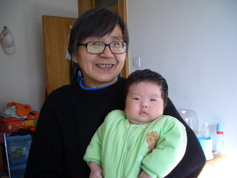
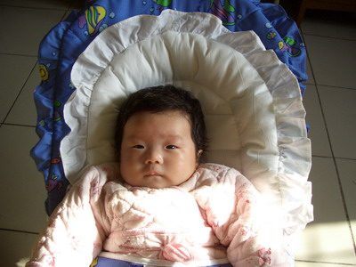
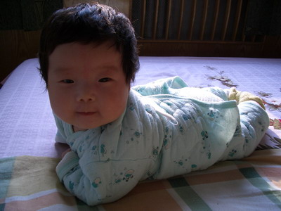

曼曼六十几天的时候，当用玩具靠近她的眼睛，她已经会眨眼了。
曼曼对贴在墙上的小宝宝挂图特别感兴趣。每次我抱着她说：“曼曼，看小宝宝”，她抬起头看见小宝宝，都会出声的笑出来，然后害羞似的把头埋在我的脖子上，或者是高兴的咿咿呀呀对着挂图说话。快满三个月的时候，我和郭嘉准备把她可爱的样子录下来，却发现她已经不感兴趣了。
这个月我们从郭嘉小时候住的院里请了一个老太太来帮着照看曼曼，爸爸妈妈则要赶回长沙去照顾刚刚做完手术的姐姐。老太太今年六十，精神矍铄，我们叫她赵阿姨。赵阿姨一直在甘肃嘉峪关附近的一个厂子里工作，这两年才回北京，住在她父母家中。郭嘉虽然以前不认识她，但由于住在一个院里，说起她们家的人还颇有印象，也和她们家里的小辈玩耍过，也算颇有渊源。

曼曼连着几天睡了整觉，就是从前一天晚上九点半左右一直睡到第二天早上六点多。可是还没有形成规律。有一次连着三天睡的很好，我以为终于熬出头了，她又连着几天一夜醒两次。
曼曼每天早上醒来的时候，一般不太哭闹。当妈妈俯下身子看着她的时候，她就会绽放出一个天使般可爱的笑容。
曼曼这个月开始对自己的手十分感兴趣，吮大拇指，经常把手举到眼前打量半天。满三个月的时候，双手开始在胸前互握，玩自己的手。
曼曼这个月有了自己的逍遥椅——弹乐椅。不过曼曼没有对躺在弹乐椅上表现出特别的兴趣，就像她没有对躺在床上表现出特别的不喜欢一样。

曼曼这个月转头和听力都有了大的发展。脑袋转来转去，十分灵活，也能分辨声音的方向。
曼曼在这个月最后一周开始自己想翻身了，脚蹬着床，脑袋仰着，使劲朝左边想翻过身来。但是她自己只能翻成侧身，还翻不过去。一旦大人帮她翻了身，她就会把头抬的高高的，左顾右盼，这个姿势颇得大家喜爱，让她爷爷、奶奶、姑姑喜欢的不行。

曼曼满三个月体检，身长62厘米，体重14斤4两。